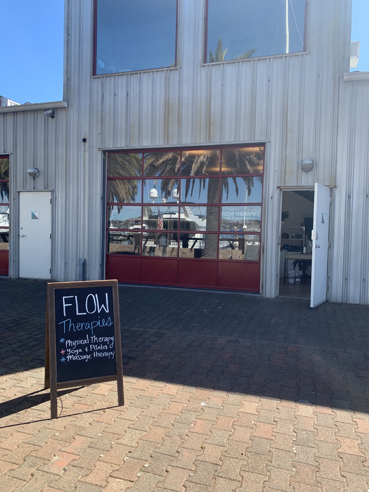

Welcome to our beautiful Healing Arts Center in Sausalito!
Flow Physical Therapy
85 Liberty Ship Way Suite #103
Sausalito CA 94965
We are located in the same building (#85) as Le Garage, the popular French restaurant.
PARKING: Park by Building 85; the "parking by permit only" lots are the designated parking for your time at our studio. No parking placard is needed.
Our studio is along the waterfront side, facing the serene Sausalito harbor. After you park, head towards the waterfront breezeway lined with palm trees behind Building 85, and you'll see us in Suite #103!

Directions from San Francisco:
- From 101-N over the Golden Gate Bridge, take Exit 444 for Rodeo Drive
- Continue onto Rodeo Dr (for 0.2 mi)
- Turn left on Nevada St (0.4 mi)
- Turn right onto Bridgeway (0.4 mi)
- Turn left into Marinship Way (big left turn that drops down into the harbor area)
- Turn immediately right onto Liberty Ship Way (300 ft)
- Turn left at the big fork to stay on Liberty Ship Way (You will be able to see Building 60, drive towards this direction) (0.1 mi)
- Destination (Building 85) will be on your left; The "parking by permit only" is our designated parking for your time at our studio. No parking placard is needed at this time.
- Once parked, walk towards the waterfront breezeway lined with palm trees on the water-facing side of Building 85, and you see us in Suite #103
Directions from North Bay:
- From 101 South take Exit 445A toward Marin City/ Sausalito
- Use the left 2 lanes to turn left onto Donahue St (500ft)
- Continue onto N Bridge Blvd (300ft)
- Use the right 2 lanes to turn right onto Bridgeway (1 mi)
- Turn left into Marinship Way (big left turn that drops down into the harbor area)
- Turn immediately right onto Liberty Ship Way (300 ft)
- Turn left at the big fork to stay on Liberty Ship Way (You will be able to see Building 60, drive towards this direction) (0.1 mi)
- Destination (Building 85) will be on your left; The "parking by permit only" is our designated parking for your time at our studio. No parking placard is needed at this time.
- Once parked, walk towards the waterfront breezeway lined with palm trees on the water-facing side of Building 85, and you see us in Suite #103
Ferry from San Francisco
Our new space is located 1.1 miles from the Sausalito Ferry Terminal, a beautiful 20 minute walk along the waterfront. The Ferry departs from the San Francisco Ferry Building or Fisherman's Wharf and takes 30 minutes. For information on ticket prices and the schedule, please visit
here!
Parking
Free parking is available to the left of the 85 Liberty Ship Way building and in the lot behind (see green circles on the map above). The "parking by permit only" is our designated parking for your time at our studio. No parking placard is needed at this time.
Please call or text (415) 335-0143 if you need any help finding us.
We are excited to welcome you to our beautiful space!